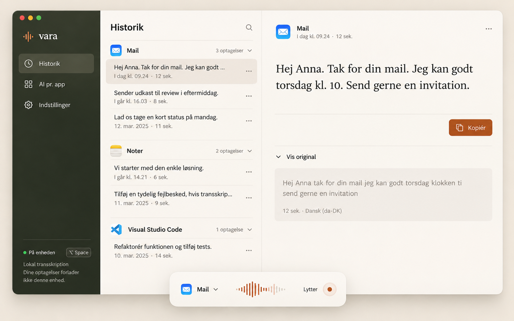
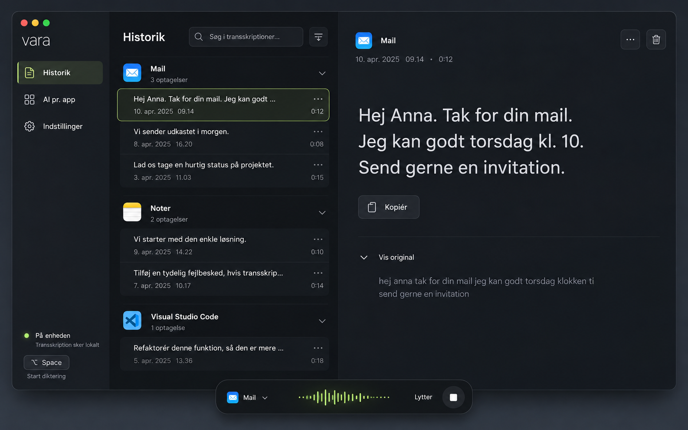
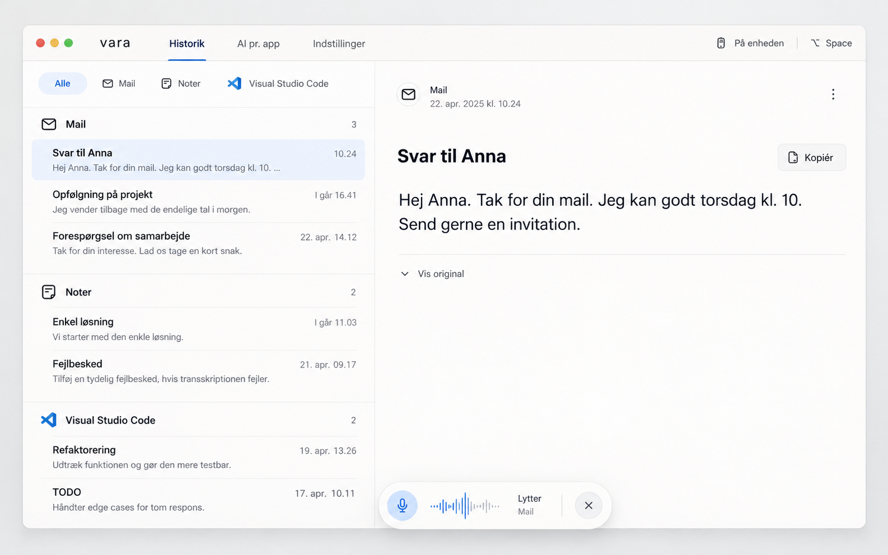

Vara / Design study
Open the interactive prototype ↗Three directions. The same simple app.
Imagegen mockups for the first edition. Click an image to view it at full size.


01Warm precision
Warm, personal and tactile. Olive, cream and a subtle orange accent. Clear separation between navigation, history and text.


02Midnight focus
Dark and focused. Graphite, muted signal green and clear typography. A precise tool for everyday use.


03Paper calm
Light, open and straightforward. Top navigation, fewer panels and space around the text.